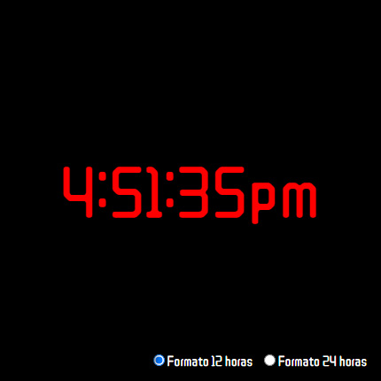

MY PROJECTS
A digital clock, with 12 and 24 hours format

A landing page, with a very simple backend (without database)
A website using the parallax effect

A digital clock, with 12 and 24 hours format
A landing page, with a very simple backend (without database)
A website using the parallax effect